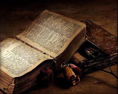

Numai în limba sa omul îşi percepe inima pe deplin.
Și eu pot promova bacul!

Tudor Arghezi-Testament
Nu-ţi voi lăsa drept bunuri, după moarte,
Decât un nume adunat pe o carte,
În seara răzvrătită care vine
De la străbunii mei până la tine,
Prin rapi şi gropi adânci
Suite de bătrânii mei pe brânci
Şi care, tânăr, să le urci te-aşteaptă
Cartea mea-i, fiule, o treaptă.
Aşeaz-o cu credinţa căpătâi.
Ea e hrişovul vostru cel dintâi.
Al robilor cu săricile, pline
De osemintele vărsate-n mine.
Ca să schimbăm, acum, intâia oară
Sapa-n condei şi brazda-n calimară
Bătrânii au adunat, printre plavani,
Sudoarea muncii sutelor de ani.
Din graiul lor cu-ndemnuri pentru vite
Eu am ivit cuvinte potrivite
Şi leagane urmaşilor stăpâni.
Şi, frământate mii de săptămâni
Le-am prefecut în versuri şi-n icoane,
Făcui din zdrenţe muguri şi coroane.
Veninul strâns l-am preschimbat în miere,
Lăsând întreaga dulcea lui putere
Am luat ocara, şi torcând uşure
Am pus-o când să-mbie, când să-njure.
Am luat cenuşa morţilor din vatră
Şi am făcut-o Dumnezeu de piatră,
Hotar înalt, cu două lumi pe poale,
Păzând în piscul datoriei tale.
Durerea noastra surdă şi amară
O grămădii pe-o singură vioară,
Pe care ascultând-o a jucat
Stăpânul, ca un ţap înjunghiat.
Din bube, mucegaiuri şi noroi
Iscat-am frumuseţi şi preţuri noi.
Biciul răbdat se-ntoarce în cuvinte
Si izbăveste-ncet pedesitor
Odrasla vie-a crimei tuturor.
E-ndreptăţirea ramurei obscure
Ieşită la lumină din padure
Şi dând în vârf, ca un ciorchin de negi
Rodul durerii de vecii întregi.
Întinsă leneşă pe canapea,
Domniţa suferă în cartea mea.
Slovă de foc şi slovă faurită
Împarechiate-n carte se mărită,
Ca fierul cald îmbrăţişat în cleşte.
Robul a scris-o, Domnul o citeşte,
Făr-a cunoaşte ca-n adîncul ei
Zace mania bunilor mei.